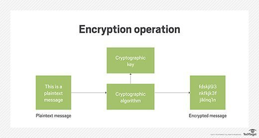

Encryption

In computing, encryption is the method by which plaintext or any other type of data is converted from a readable form to an encoded version that can only be decoded by another entity if they have access to a decryption key. Encryption is one of the most important methods for providing data security, especially for end-to-end protection of data transmitted across networks. (Rouse, 2017)
Therfore, encryption has its advantages and disadvantages. Mainly good than bad.
|
Three examples of crimes in the past with the absence of technology
|
- Extortion
- Terrorist Organization
- Sex Trafficking
|
|
Corresponding examples for (A) in which the use of technology has evolved the way that particular crime is committed
|
-
Ransomware: Ransomware is a type of malicious software from cryptovirology that threatens to publish the victim's data or perpetually block access to it unless a ransom is paid. While some simple ransomware may lock the system in a way which is not difficult for a knowledgeable person to reverse, more advanced malware uses a technique called cryptoviral extortion, in which it encrypts the victim's files, making them inaccessible, and demands a ransom payment to decrypt them. (Young & Yung, 1996)
-
Terrorist Organization: Terrorists can organize acts of terrorism with the use of encryption through end-to-end encrypted messages, using normal consumer apps such as Telegram and encrypted emails. With the use of this, terrorists can plot crimes without being noticed by the government due to the privacy. (Graham, 2016)
-
Sex Trafficking: Traffickers advertise online, luring victims, track victims by cellphones and use encrypted messaging systems to communicate with accomplices. (Wulfhorst, 2017)
|
|
Actions/Responses that may mitigate the effect of (B)
|
- Remove privacy laws to allow certain information to be unencrypted
- Standardized encryption methods to allow law enforcements to decrypt information if they have a warrant.
|
|
At least three specific crimes that may be mitigated with the use of technology
|
- Data Theft
- Protects Privacy
- Maintains integrity therefore preventing fraud
|
|